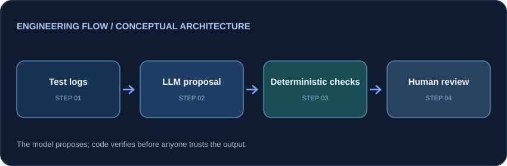

AI-assisted QA · Proof of concept
AI-Assisted Log Triage
An experiment in using an LLM to propose failure classifications while deterministic Python validation checks structure, evidence and uncertainty.
The engineering problem
Test failure logs can be time-consuming to interpret. An LLM may help organize likely causes, but its conclusions cannot be treated as authoritative without verification.
Architecture / data flow

Synthetic failure log → OpenAI model → structured classification → schema/value checks → source-evidence verification → human review when needed
Implementation
- Python-based structured classification with probable cause, confidence and supporting evidence.
- Validation for missing fields, malformed results, unsupported evidence, low-confidence cases and generic logs.
- Human-review routing rather than automatically accepting uncertain AI classifications.
Verification and results
The repository documents three sample failure logs and single-run demonstrations. It does not establish measured classification accuracy; a larger labelled evaluation set is a future milestone.
Scope and limitations
Small synthetic sample; strict matching may reject legitimate paraphrases; no production operational integration claimed.
Review code, setup instructions and current status on GitHub ↗